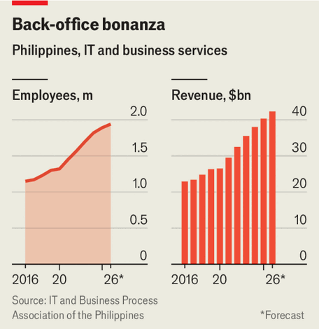

The Philippines’ big offshoring industry is growing despite AI
How long will that last?
Aug 6th 2026
At 8pm every weekday Trizza files into a lift with other workers, sits at her desk in Manila, the capital of the Philippines, and starts calling personal-injury lawyers in northern Virginia. Her job involves finding new business for an American chiropractic firm; it teams up with lawyers to treat their injured clients. Like many offshore staff in the Philippines, Trizza works long hours late at night in a language that is not her native tongue. But one thing has recently made her job easier: these days she dictates her emails to ChatGPT, which quickly rewrites them in a “professional” tone.
Trizza is surprisingly enthusiastic about a technology that some have predicted will crush her industry. Artificial intelligence is, in theory, increasingly capable of doing much of the offshore services industry’s traditional work, such as transcribing notes or resolving customer queries. In July last year Sam Altman, OpenAI’s boss, declared that customer-support jobs would soon be “totally, totally gone” because of AI.
Yet in the Philippines—the world’s call-centre capital, where offshoring generates roughly 8% of GDP—business has so far held up better than expected. IBPAP, an industry body, reckons around 1.9m Filipinos were working in “IT and business process management”, which includes all sorts of offshore services, at the end of 2025. That is 4% higher than in the previous year and 20% up from 2022. It expects revenue from the services they export to rise 5% in 2026, to $42bn, following 6% growth in 2025.

This is in part because there remain limits to what AI can automate. Handling complaints in call centres is an “incredibly messy end of a business” involving lots of processes that can’t all be replicated by AI, says Derek Gallimore, who runs Outsource Accelerator, an advisory firm in Manila. “Mistakes cost a lot,” says Patrick Brown, the head of another offshoring firm. “Do you trust AI agents to run support tickets on an $800,000 ultrasound machine?” Many people still want to speak to humans; Filipinos stand out as empathetic listeners who speak English well. And in any case, lots of customers are old people who struggle to use online chatbots.
AI tools are making offshore staff such as Trizza more productive (and thus better value), which is giving companies more incentive to make use of their services, says Torsten Slok of Apollo Global Management, an American investment firm. Some offshoring firms in the Philippines have been able to put up their hourly rates because their employees are fixing problems more swiftly than they were before.
Moreover, AI is helping offshore workers in the Philippines do new, more complex jobs. They are picking up work training AI models or supervising AI agents. Hospitals in America are increasingly outsourcing the checking of insurance eligibility and filing of medical records to Filipinos packing AI tools. Mr Gallimore says more “high-value” work, such as accountancy or engineering, is going offshore in part because “AI is a leveller. You can now teach someone complex stuff quickly” and still get it done more cheaply than in America or Europe. Some of this is done at so-called global capability centres, captive back offices that are booming in India and also now growing in the Philippines.
Can this apparent good fortune last? If the industry’s revenues look healthy for now, there are nonetheless reasons to think it will become a less effective engine for creating jobs. Offshore firms in the Philippines admit that AI is starting to automate away “tier one” work involving simple tasks such as data entry or answering basic inquiries. New roles in accounting or health care are better-paid, but may not end up as numerous as those lost. IBPAP predicts that the number of people employed in offshore work in the Philippines will grow only 3% this year, down from 7% in 2024. The industry once talked of having 2.5m employees by 2028; in July it cut its best-case projection to 2.14m.
Some worry that the gradual disappearance of bottom-rung work is going to make it harder for Filipinos to acquire important skills. Starting in a basic call-centre job and working up has long been a way for Filipinos to rise “from minimum wage to the middle class”, says David Sudolsky of Boldr, another offshoring firm. But now he worries that “the entry-level route doesn’t exist”. “For the already highly skilled, AI is good. But there hasn’t been any upskilling,” says Mylene Cabalona, the president of a union for offshore workers.
Even as AI is making offshore workers more efficient, some say it is making their jobs much worse. Kyle, who has worked in call centres in Manila since 2018, complains that his targets have recently been ramped up. He dislikes the fact that AI tools now analyse and rate the quality of his calls with customers; he feels “pressure to make each and every call good”. AI “doesn’t recognise if you’re having issues with the family, or a bad time”, he says. No one wants a robot for a boss. ■
For exclusive coverage of Asian politics, economics and security, sign up to Asia Bulletin, our weekly subscriber-only newsletter.